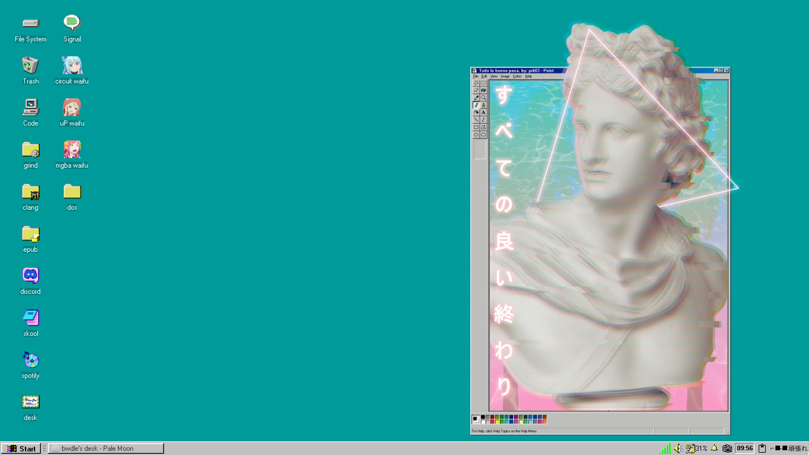
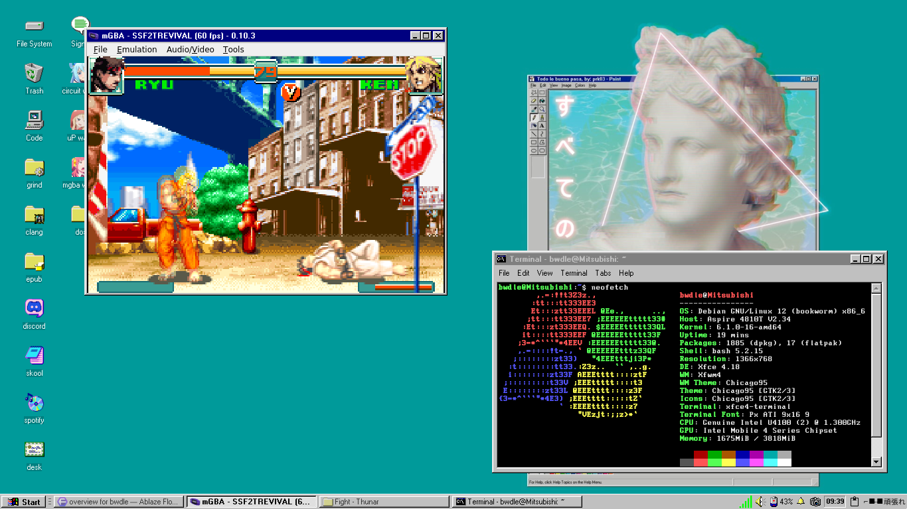
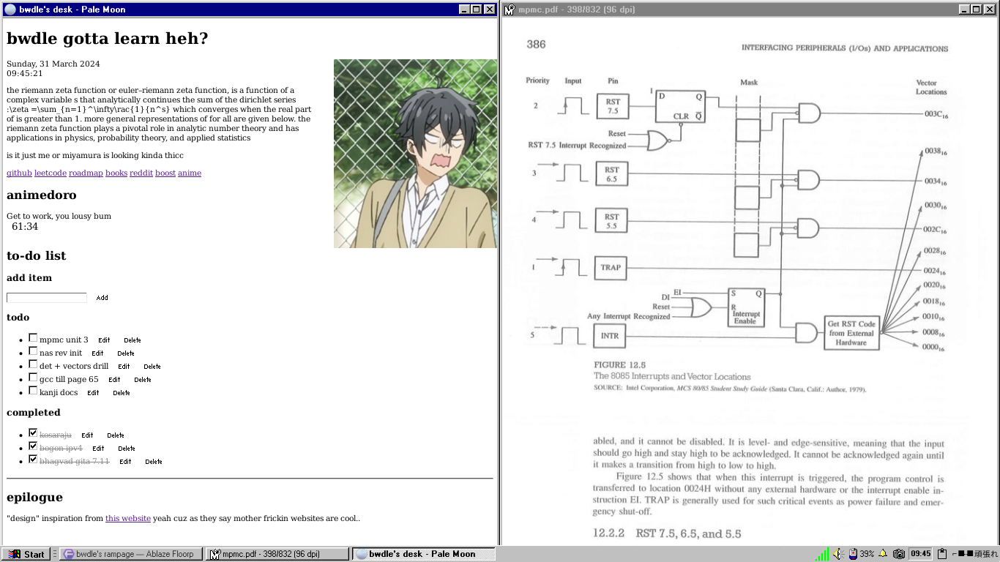
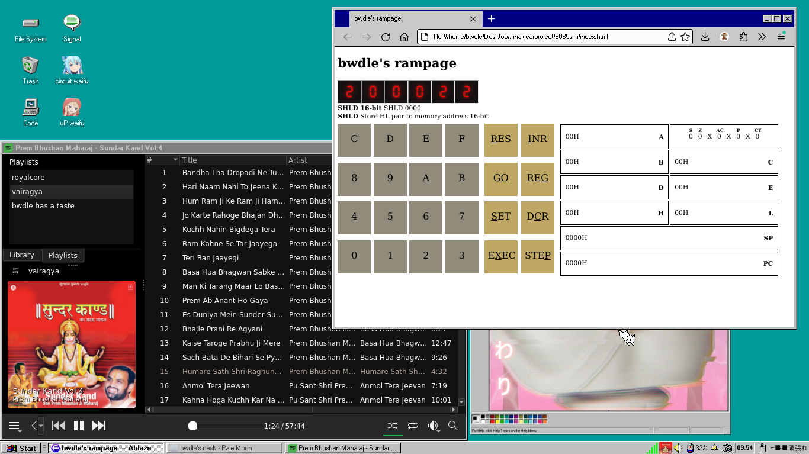
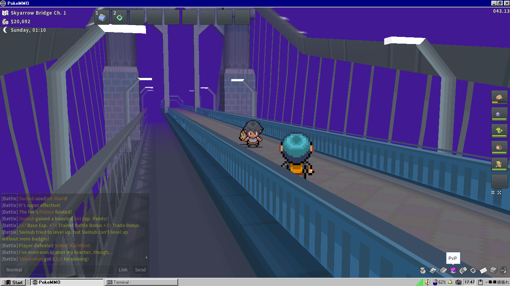
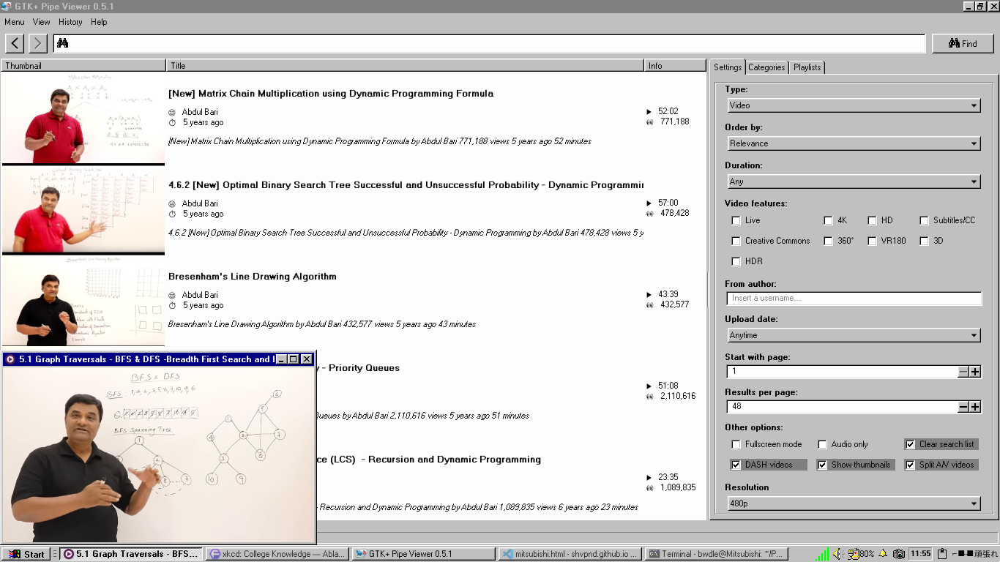
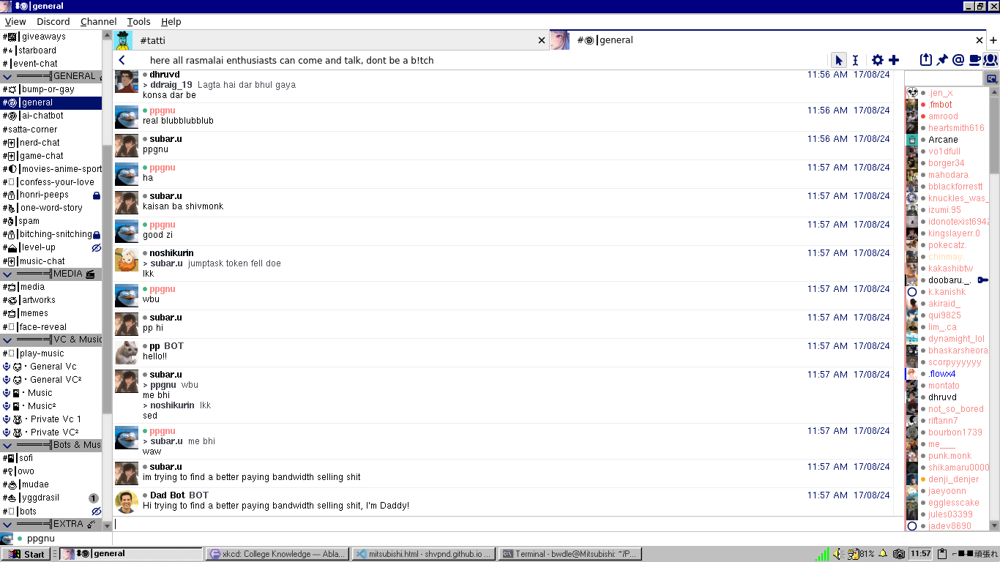
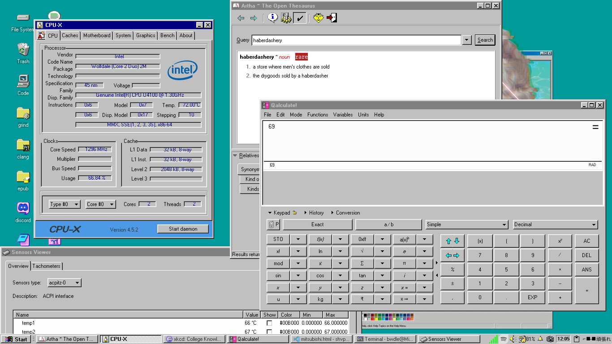

meet mitsubishi, my college beater. an acer aspire 4810tz that i inherited from my father. mine's been running since 2010 and is still working well; like it can play videos at 480p on mpv without any lag. and unlike the standard 4810tz, it’s equipped with a dual core intel u4100. i’ve customized it with the chicago95 theme for a retro vibe, tweaking my other apps like discord and spotify to fit in the theme.
mitsubishi is old. though i've thought about using it until the end of my college (yeah, that's another way to say i'm broke)
some screenshots of my debian workspace on mitsukun








—shvpnd. last updated - 17/09/2024